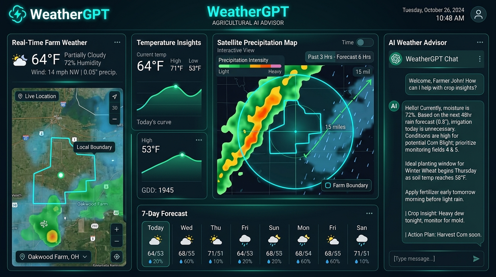
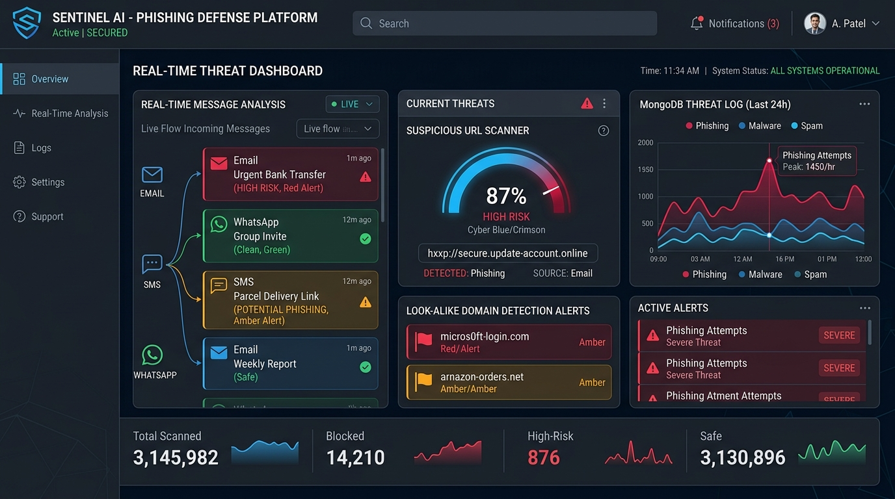
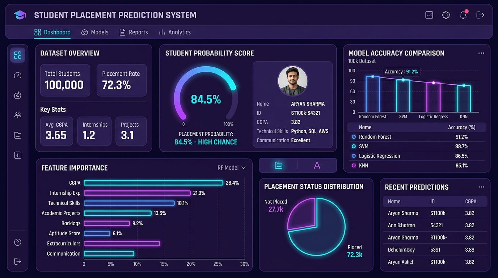
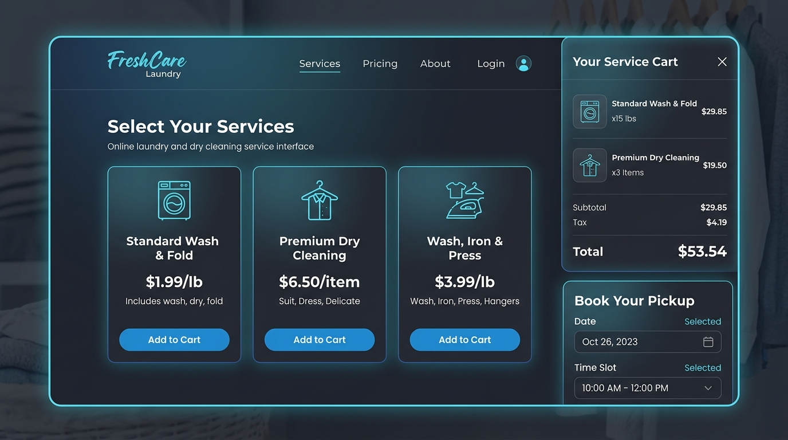

AI AgricultureWeatherGPT: Agricultural AI Advisor
An AI-driven climate platform developed for farmers ("for farmer's"), delivering natural language weather consultations, radar precipitation analytics, and crop advisories.
Passionate Computer Science student at Uttar Pradesh Textile Technology Institute (UPTTI), Kanpur. Specialized in crafting robust full-stack web applications with MongoDB, Express.js, React.js, and Node.js, integrating AI solutions like WeatherGPT, and solving algorithmic problems with Java DSA.
Created specifically for farmers and agriculturalists ("for farmer's"), combining real-time meteorological sensor feeds with OpenAI GPT reasoning to deliver hyper-localized crop management and climate foresight.
Farmers often face severe crop losses due to unpredicted downpours, frost, and high humidity fungal outbreaks. WeatherGPT translates raw meteorological metrics into clear, actionable advice in plain language.
Soil moisture is optimal for germination. Low precipitation chance over 48 hours; irrigation is balanced. Ideal window for early morning fertilization.
Balancing computer science theory, full-stack web applications, and data structure problem-solving with collaborative campus leadership.
I am a 3rd-year B.Tech Computer Science & Engineering student at Uttar Pradesh Textile Technology Institute (UPTTI), Kanpur, with an outstanding academic record of 9.40 YGPA in Year 2 and 8.41 YGPA in Year 1.
My engineering focus spans modern web architecture, where I build reactive, accessible, and fast full-stack applications with MongoDB, Express.js, React.js, and Node.js. Having concluded a productive Front-End Developer Internship at CodeAlpha, I take pride in clean code, responsive micro-interactions, and secure API integrations.
Beyond frontend aesthetics, I am passionate about data-driven intelligence: I engineered an AI-Based Phishing Detection & Prevention System to defend against look-alike spoof domains, authored WeatherGPT to support farming communities with agricultural forecasts, and designed a Placement Prediction ML Model analyzing 100,000 student records.
Organized technical hackathons, cultural festivals, and skill-building workshops, leading student volunteers and coordinating with faculty members.
Supported social awareness campaigns, student blood donation drives, and community outreach initiatives across Kanpur.
Proficiencies honed across full-stack development, software engineering courses, internships, and continuous algorithmic problem solving.
A showcase of full-stack MERN applications, AI systems, machine learning pipelines, and responsive front-end projects built from the ground up.

AI AgricultureAn AI-driven climate platform developed for farmers ("for farmer's"), delivering natural language weather consultations, radar precipitation analytics, and crop advisories.

MERN & AIAnalyzes emails, SMS, and WhatsApp messages to detect phishing attempts, identify look-alike spoof domains, and trigger real-time warning alerts with MongoDB threat logs.

Machine LearningPredictive classification engine trained on 100,000 student records using Random Forest, SVM, Logistic Regression, and KNN with hyperparameter tuning and placement risk insights.

Web AppResponsive web portal offering service selection, interactive cart drawer with real-time price tallying, and instant automated email booking confirmations via EmailJS.
Digital agriculture web assistant providing disease diagnostics, crop care tips, and resource catalogs for sustainable agricultural productivity.
Digital pass creation, verification, check-in and check-out timestamp logging, and administrative visitor analytics dashboard for campus & institutional security.
Engineered 3 responsive front-end projects: an interactive Music Player, an Image Gallery with filters, and a dynamic developer portfolio during CodeAlpha internship.
Professional hands-on experience in modern frontend development and industry-aligned masterclasses.
Rigorous academic foundation in Computer Science & Engineering supplemented by recognized industry certifications.
CodeAlpha Organization
NSDC via Skill India Digital Hub
ServiceNow with AICTE and SmartBridge
Tata Consultancy Services (TCS iON)
NoviTech R&D Pvt. Ltd. (30 Days intensive)
STBG Academy
STP Computer Education
I'm actively open for internship opportunities, project collaborations, and full-stack software development discussions.